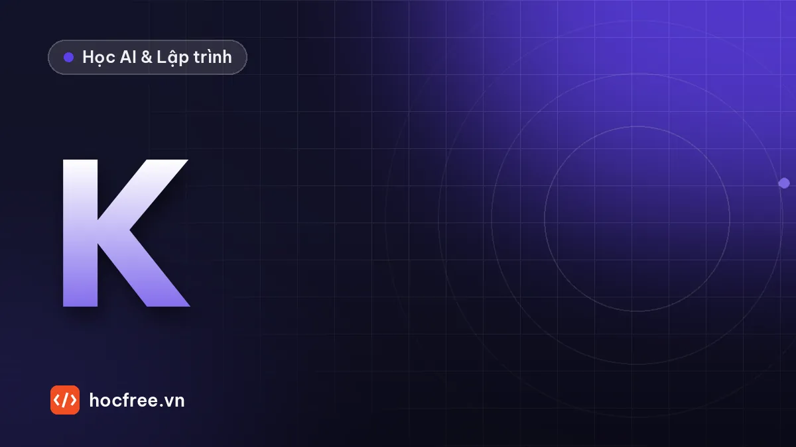

Hiệu chuẩn camera: ma trận nội tại, méo ống kính và sai số reprojection
Mô hình pinhole và hệ số méo, hiệu chuẩn bàn cờ với OpenCV trên bộ ảnh có đáp án, đánh giá reprojection từng ảnh, khử méo, lưu YAML và cách chụp ảnh hiệu chuẩn đúng.

Học xong bài này, bạn sẽ
- Hiểu mô hình pinhole và hệ số méo
- Hiệu chuẩn bằng bàn cờ với OpenCV
- Đánh giá sai số reprojection
Nên học trước: Quy đổi pixel sang mm và đánh giá sai số
Nội dung bài viết
- 1. Mô hình camera pinhole
- 2. Mô hình méo ống kính
- 3. Bàn cờ hiệu chuẩn: chuẩn bị và in
- 4. Bộ ảnh mô phỏng có đáp án
- 5. Phát hiện góc bàn cờ subpixel
- 6. Hiệu chuẩn với cv2.calibrateCamera
- 7. Đánh giá: sai số từng ảnh và độ bất định của tham số
- 8. Khử méo: ảnh và điểm
- 9. Lưu và đọc kết quả bằng YAML
- 10. Chụp bộ ảnh hiệu chuẩn thật: hướng dẫn thực hành
- 11. Lỗi thường gặp
- 12. Bài tập
- Tóm tắt
Bài trước, Quy đổi pixel sang mm và đánh giá sai số, kết thúc bằng một bảng đáng lo: chỉ với méo thùng nhẹ (k1 = −0,1), đoạn 10 mm đo ở gần góc ảnh đã sai −73 µm dù hệ số tỉ lệ được hiệu chuẩn rất cẩn thận ở tâm ảnh. Không hệ số tỉ lệ nào sửa được loại sai số này, vì nó thay đổi theo vị trí trong ảnh. Bài này dạy cách mô hình hóa chính camera: ma trận nội tại K (tiêu cự, tâm quang học) và các hệ số méo ống kính, đo chúng bằng bàn cờ với cv2.calibrateCamera, đánh giá kết quả bằng sai số reprojection, rồi khử méo ảnh hoặc khử méo từng điểm đo. Đây là nền cho hai bài kế tiếp: Homography: đo trên mặt phẳng khi camera nghiêng và Hand-eye calibration camera – robot, vốn đều giả định bạn đã có K và hệ số méo đáng tin.
1. Mô hình camera pinhole
Camera lý tưởng (pinhole, lỗ kim) chiếu một điểm 3D lên ảnh theo hai bước. Bước một, đổi điểm từ hệ tọa độ vật (ví dụ hệ gắn với bàn cờ, đơn vị mm) sang hệ tọa độ camera bằng phép quay R và tịnh tiến t, gọi là tham số ngoại tại (extrinsic). Bước hai, chia cho độ sâu Z rồi nhân với ma trận nội tại (intrinsic) K để ra pixel:
[Xc, Yc, Zc] = R · [X, Y, Z] + t (hệ vật → hệ camera, mm)
x = Xc / Zc, y = Yc / Zc (tọa độ chuẩn hóa, không đơn vị)
u = fx · x + cx, v = fy · y + cy (pixel)
| fx 0 cx |
K = | 0 fy cy |
| 0 0 1 || Tham số | Ý nghĩa | Ước lượng nhanh từ thông số |
|---|---|---|
| fx, fy | Tiêu cự tính bằng pixel theo hai chiều | fx ≈ f (mm) / kích thước pixel (mm). Ống kính 6 mm, pixel 3,75 µm → khoảng 1600 px. fx ≈ fy vì pixel vuông |
| cx, cy | Tâm quang học (principal point): chân đường vuông góc từ tâm ống kính xuống cảm biến | Gần tâm ảnh (W/2, H/2) nhưng thường lệch vài chục pixel do lắp ráp |
| R, t (mỗi ảnh một bộ) | Tư thế của bàn cờ so với camera trong ảnh đó | Không cần cho đo lường sau này, nhưng là "sản phẩm phụ" hữu ích (homography, hand-eye) |
K chỉ phụ thuộc vào camera + ống kính + vị trí lấy nét, không phụ thuộc vật đặt ở đâu. Vì vậy: đổi lấy nét, đổi zoom, tháo lắp ống kính là phải hiệu chuẩn lại. Đoạn code dưới tính chiếu bằng tay và so với cv2.projectPoints để bạn chắc chắn hiểu công thức.
import cv2
import numpy as np
f_mm, pixel_mm = 6.0, 0.00375 # ống kính 6 mm, cảm biến 1/3" 1280 × 960, pixel 3,75 µm
fx = f_mm / pixel_mm
K = np.array([[fx, 0, 652.0], [0, fx, 471.0], [0, 0, 1]])
print(f"fx ước lượng từ thông số: {fx:.0f} px")
R, _ = cv2.Rodrigues(np.radians([10.0, -5.0, 0.0])) # bàn cờ nghiêng 10° quanh x, -5° quanh y
t = np.array([-60.0, -40.0, 500.0]) # cách camera 500 mm
P = np.array([100.0, 50.0, 0.0]) # một góc bàn cờ, mm
Pc = R @ P + t
u, v = K[0, 0] * Pc[0] / Pc[2] + K[0, 2], K[1, 1] * Pc[1] / Pc[2] + K[1, 2]
uv, _ = cv2.projectPoints(P.reshape(1, 3), cv2.Rodrigues(R)[0], t, K, None)
print(f"Tính tay: ({u:.3f}, {v:.3f}) projectPoints: ({uv[0, 0, 0]:.3f}, {uv[0, 0, 1]:.3f})")
print(f"Ở Z = 500 mm, 1 pixel ứng với khoảng {500 / fx:.4f} mm trên vật")fx ước lượng từ thông số: 1600 px
Tính tay: (773.361, 497.232) projectPoints: (773.361, 497.232)
Ở Z = 500 mm, 1 pixel ứng với khoảng 0.3125 mm trên vậtDòng cuối là cầu nối với bài trước: tỉ lệ mm/pixel ≈ Z / fx. Nó chỉ đúng ở tâm ảnh với vật vuông góc; mô hình đầy đủ cho phép tính đúng ở mọi chỗ.
2. Mô hình méo ống kính
Ống kính thật bẻ cong tia sáng khác pinhole. OpenCV mô tả độ méo bằng các hệ số áp lên tọa độ chuẩn hóa (x, y), trước khi nhân K:
r² = x² + y²
x_méo = x·(1 + k1·r² + k2·r⁴ + k3·r⁶) + 2·p1·x·y + p2·(r² + 2x²)
y_méo = y·(1 + k1·r² + k2·r⁴ + k3·r⁶) + p1·(r² + 2y²) + 2·p2·x·y
dist = [k1, k2, p1, p2, k3] (thứ tự của OpenCV)| Loại | Hệ số | Nguyên nhân, biểu hiện |
|---|---|---|
| Méo xuyên tâm (radial), dạng thùng (barrel) | k1 < 0 | Ống kính góc rộng, tiêu cự ngắn. Điểm bị kéo vào tâm, càng xa tâm càng mạnh; đường thẳng ở mép cong phồng ra ngoài |
| Méo xuyên tâm, dạng gối (pincushion) | k1 > 0 | Hay gặp ở ống kính tele, một số ống zoom. Điểm bị đẩy ra xa tâm |
| Bậc cao | k2, k3 | Hiệu chỉnh dạng méo "râu ria" (mustache) khi k1, k2 trái dấu. k3 chỉ cần cho ống góc rất rộng |
| Méo tiếp tuyến (tangential) | p1, p2 | Thấu kính không đồng trục, không song song hoàn hảo với cảm biến. Thường rất nhỏ (10⁻⁴ tới 10⁻³) |
Ống kính công nghiệp tiêu cự trung bình và dài (16 mm, 25 mm, 35 mm trên cảm biến cỡ 2/3") thường méo dưới 0,1–0,5%; ống 4–8 mm có thể méo vài phần trăm. Datasheet ống kính hay ghi "distortion" theo % ở góc ảnh. Đoạn code sau tính một điểm bị dịch bao nhiêu pixel ở tâm, giữa và góc ảnh với bộ hệ số sẽ dùng trong mô phỏng của bài:
import cv2
import numpy as np
K = np.array([[1600.0, 0, 652.0], [0, 1600.0, 471.0], [0, 0, 1]])
dist = np.array([-0.26, 0.11, 0.0007, -0.0004, 0.0]) # k1, k2, p1, p2, k3
print(" điểm lý tưởng (px) → điểm méo (px) dịch (px) méo (%)")
for u, v in [(700, 500), (960, 720), (1270, 950), (10, 10)]:
x, y = (u - K[0, 2]) / K[0, 0], (v - K[1, 2]) / K[1, 1] # tọa độ chuẩn hóa
uv_meo, _ = cv2.projectPoints(np.array([[x, y, 1.0]]), np.zeros(3), np.zeros(3), K, dist)
um, vm = uv_meo.ravel()
r_ly_tuong = np.hypot(u - K[0, 2], v - K[1, 2])
r_meo = np.hypot(um - K[0, 2], vm - K[1, 2])
print(f" ({u:4d}, {v:3d}) → ({um:7.1f}, {vm:6.1f}) {np.hypot(um - u, vm - v):6.1f} {100 * (r_meo / r_ly_tuong - 1):+6.2f}") điểm lý tưởng (px) → điểm méo (px) dịch (px) méo (%)
( 700, 500) → ( 700.0, 500.0) 0.0 -0.03
( 960, 720) → ( 955.2, 716.2) 6.1 -1.54
(1270, 950) → ( 1235.4, 923.6) 43.5 -5.57
( 10, 10) → ( 46.4, 36.5) 45.1 -5.70Gần tâm, điểm gần như không dịch; ở khoảng giữa tâm và góc dịch 6 pixel; ở góc ảnh dịch khoảng 45 pixel (méo khoảng −5,6%). Một ống kính "méo 6%" là ống góc rộng điển hình. Nhưng hãy nhớ con số ở bài trước: chỉ k1 = −0,1 (khoảng −0,5% ở góc) đã gây sai 73 µm. Với đo lường, méo nhỏ cũng phải xử lý.
3. Bàn cờ hiệu chuẩn: chuẩn bị và in
Phương pháp chuẩn (Zhang) dùng một vật mẫu phẳng có các điểm đã biết tọa độ, chụp ở nhiều tư thế. Bàn cờ là mẫu phổ biến nhất vì góc giao giữa bốn ô vuông xác định được tới vài phần trăm pixel. Vài quy ước quan trọng:
- OpenCV đếm số góc trong (inner corners), không đếm số ô. Bàn cờ 10 × 7 ô có 9 × 6 góc trong, khai báo
(9, 6). - Chọn một chiều chẵn, một chiều lẻ (như 9 × 6) để bàn cờ không đối xứng khi xoay 180°, và chừa lề trắng quanh bàn cờ rộng ít nhất một ô: thuật toán tìm góc cần lề này.
- Tọa độ vật của góc (i, j) là (i × cạnh ô, j × cạnh ô, 0). Đơn vị cạnh ô quyết định đơn vị của t (mm vào thì mm ra). K và hệ số méo không phụ thuộc đơn vị này.
Code tạo file PNG để in ở 300 dpi. Chú ý dòng tính kích thước ô thực: 25 mm ở 300 dpi là 295,3 chấm, phải làm tròn, nên ô in ra không đúng 25,000 mm. Luôn đo lại bản in bằng thước kẹp (đo khoảng cách 8 ô rồi chia 8) và dùng con số đo được.
import cv2
import numpy as np
DPI, O_MM, COT, HANG = 300, 25.0, 9, 6 # 9 × 6 góc trong → 10 × 7 ô
cham_moi_o = round(O_MM / 25.4 * DPI) # số chấm in cho một ô
o_thuc = cham_moi_o * 25.4 / DPI
le = cham_moi_o # lề trắng rộng 1 ô
w, h = (COT + 1) * cham_moi_o + 2 * le, (HANG + 1) * cham_moi_o + 2 * le
anh = np.full((h, w), 255, np.uint8)
for j in range(HANG + 1):
for i in range(COT + 1):
if (i + j) % 2 == 0: # ô góc trên trái màu đen
x, y = le + i * cham_moi_o, le + j * cham_moi_o
anh[y:y + cham_moi_o, x:x + cham_moi_o] = 0
cv2.imwrite("ban_co_9x6_25mm_300dpi.png", anh)
print(f"{cham_moi_o} chấm/ô → ô in ra {o_thuc:.3f} mm; khổ {w / DPI * 25.4:.0f} × {h / DPI * 25.4:.0f} mm (vừa A4 ngang)")295 chấm/ô → ô in ra 24.977 mm; khổ 300 × 225 mm (vừa A4 ngang)4. Bộ ảnh mô phỏng có đáp án
Để biết hiệu chuẩn có đúng hay không, ta cần một camera có đáp án. Đoạn code sau là một "camera ảo": ống kính 6 mm méo thùng như ở mục 2, cảm biến 1280 × 960, chụp bàn cờ 9 × 6 ô 25 mm ở 15 tư thế. Cách vẽ: với mỗi pixel ảnh, tính tia sáng tương ứng (bỏ méo bằng cv2.undistortPoints), giao tia với mặt bàn cờ, rồi tô màu theo ô. Vì đi ngược từ pixel ra vật, ảnh có méo đúng theo mô hình, biên ô được làm mịn cỡ 1 pixel, thêm mờ quang học và nhiễu như camera thật. 15 tư thế được chọn theo đúng hướng dẫn ở mục 9: có ảnh nhìn thẳng, ảnh nghiêng 20–30° theo nhiều trục, ảnh đẩy ra bốn góc và bốn cạnh khung hình, ảnh xoay 90°.
import math
import os
import cv2
import numpy as np
# ---- "Sự thật" của camera ảo: phần hiệu chuẩn phía sau KHÔNG được dùng các số này ----
W, H = 1280, 960
K_THAT = np.array([[1600.0, 0, 652.0], [0, 1600.0, 471.0], [0, 0, 1]])
DIST_THAT = np.array([-0.26, 0.11, 0.0007, -0.0004, 0.0]) # k1, k2, p1, p2, k3
COT, HANG, O = 9, 6, 25.0 # 9 × 6 góc trong, ô 25 mm
# Tia sáng của từng pixel (tọa độ chuẩn hóa đã bỏ méo): tính một lần, dùng cho mọi ảnh
uu, vv = np.meshgrid(np.arange(W, dtype=np.float64), np.arange(H, dtype=np.float64))
luoi = np.stack([uu.ravel(), vv.ravel()], axis=1).reshape(-1, 1, 2)
dung = (cv2.TERM_CRITERIA_COUNT | cv2.TERM_CRITERIA_EPS, 40, 1e-10)
TIA = cv2.undistortPoints(luoi, K_THAT, DIST_THAT, None, None, None, dung).reshape(H, W, 2)
def ve_ban_co(rvec, tvec, rng):
"""Ảnh xám của bàn cờ ở tư thế (rvec, tvec): pixel → tia → giao mặt bàn cờ Z = 0 → màu ô."""
R, _ = cv2.Rodrigues(rvec)
Hi = np.linalg.inv(np.column_stack([R[:, 0], R[:, 1], tvec])) # ảnh chuẩn hóa → mặt bàn cờ
x, y = TIA[..., 0], TIA[..., 1]
m = Hi[2, 0] * x + Hi[2, 1] * y + Hi[2, 2]
X = (Hi[0, 0] * x + Hi[0, 1] * y + Hi[0, 2]) / m # mm trên bàn cờ
Y = (Hi[1, 0] * x + Hi[1, 1] * y + Hi[1, 2]) / m
p = np.maximum(np.hypot(*np.gradient(X)), np.hypot(*np.gradient(Y))) # mm/pixel tại chỗ
# sin đổi dấu ở mỗi đường kẻ ô; chia cho cỡ pixel → chuyển tiếp mịn rộng khoảng 1 pixel
sx = np.clip(O / math.pi * np.sin(math.pi * X / O) / (p / 2), -1, 1)
sy = np.clip(O / math.pi * np.sin(math.pi * Y / O) / (p / 2), -1, 1)
o_co = (X > -O) & (X < COT * O) & (Y > -O) & (Y < HANG * O)
tam_giay = (X > -2 * O) & (X < (COT + 1) * O) & (Y > -2 * O) & (Y < (HANG + 1) * O) & (m > 0)
anh = np.where(o_co, 125 - 95 * sx * sy, 220.0) # ô đen 30, ô trắng 220, lề trắng 220
anh = np.where(tam_giay, anh, 70.0) # phông nền phía sau tấm
anh = cv2.GaussianBlur(anh, (0, 0), 0.8) + rng.normal(0, 2.0, anh.shape)
return np.clip(np.round(anh), 0, 255).astype(np.uint8)
# 15 tư thế: góc nghiêng rx, ry, góc xoay rz (độ), vị trí tâm bàn cờ trên ảnh (u, v), khoảng cách Z (mm)
TU_THE = [(0, 0, 0, 640, 480, 600), (25, 0, 5, 640, 480, 560), (-25, 0, -5, 640, 480, 560),
(0, 28, 0, 640, 480, 560), (0, -28, 10, 640, 480, 560),
(15, 15, 0, 310, 240, 640), (15, -15, -10, 975, 245, 640),
(-15, 15, 10, 310, 690, 640), (-15, -15, 0, 975, 705, 640),
(20, 0, 90, 250, 480, 640), (-20, 0, 85, 1010, 480, 640),
(0, 20, 3, 640, 225, 660), (0, -20, -3, 640, 720, 660),
(30, 20, 30, 640, 480, 520), (-10, -30, -25, 640, 480, 520)]
objp = np.zeros((COT * HANG, 3))
objp[:, :2] = np.mgrid[0:COT, 0:HANG].T.reshape(-1, 2) * O
tam_ban_co = np.array([(COT - 1) * O / 2, (HANG - 1) * O / 2, 0])
os.makedirs("calib", exist_ok=True)
rng = np.random.default_rng(1)
rvecs, tvecs = [], []
for k, (rx, ry, rz, u, v, Z) in enumerate(TU_THE):
R = cv2.Rodrigues(np.radians([rx, ry, 0.0]))[0] @ cv2.Rodrigues(np.array([0, 0, math.radians(rz)]))[0]
huong = cv2.undistortPoints(np.array([[[u, v]]], np.float64), K_THAT, DIST_THAT).ravel()
t = np.array([huong[0] * Z, huong[1] * Z, Z]) - R @ tam_ban_co # tâm bàn cờ nằm trên tia qua (u, v)
rvec = cv2.Rodrigues(R)[0].ravel()
goc_anh = cv2.projectPoints(objp, rvec, t, K_THAT, DIST_THAT)[0].reshape(-1, 2)
assert goc_anh.min() > 60 and goc_anh[:, 0].max() < W - 60 and goc_anh[:, 1].max() < H - 60
cv2.imwrite(f"calib/view_{k:02d}.png", ve_ban_co(rvec, t, rng))
rvecs.append(rvec)
tvecs.append(t)
np.savez("calib/dap_an.npz", K=K_THAT, dist=DIST_THAT, rvecs=np.array(rvecs), tvecs=np.array(tvecs))
print(f"Đã tạo {len(TU_THE)} ảnh {W}×{H} trong calib/ và lưu đáp án calib/dap_an.npz")Đã tạo 15 ảnh 1280×960 trong calib/ và lưu đáp án calib/dap_an.npzMở vài ảnh trong calib/ để xem: ảnh view_05.png (bàn cờ ở góc trên trái) cho thấy các đường kẻ ô cong rõ, đúng như méo thùng. Với camera thật, thư mục này chứa ảnh bạn chụp; mọi bước sau giữ nguyên, chỉ không có file đáp án.
5. Phát hiện góc bàn cờ subpixel
Có hai hàm. cv2.findChessboardCorners (cổ điển) tìm góc ở độ chính xác cỡ pixel, sau đó bắt buộc tinh chỉnh bằng cv2.cornerSubPix: hàm này dùng tính chất "gradient tại mọi điểm quanh góc vuông góc với vector từ góc tới điểm đó" để giải vị trí góc dưới pixel. cv2.findChessboardCornersSB (thuật toán mới hơn, có từ OpenCV 4) bền hơn với nhiễu, mờ, chiếu sáng không đều và trả về góc đã ở mức subpixel.
Tham số winSize của cornerSubPix là nửa cạnh cửa sổ tìm kiếm: (11, 11) nghĩa là cửa sổ 23 × 23 pixel. Cửa sổ phải nhỏ hơn cạnh ô trên ảnh (để không chạm góc bên cạnh) nhưng đủ lớn để chứa vùng biên quanh góc. Ở đây cạnh ô cỡ 55–75 pixel nên (11, 11) hợp lý; với ô chỉ 20 pixel, giảm xuống (5, 5).
import glob
import cv2
import numpy as np
COT, HANG, O = 9, 6, 25.0
objp = np.zeros((COT * HANG, 3), np.float32)
objp[:, :2] = np.mgrid[0:COT, 0:HANG].T.reshape(-1, 2) * O
DUNG = (cv2.TERM_CRITERIA_EPS + cv2.TERM_CRITERIA_MAX_ITER, 30, 0.001)
dap_an = np.load("calib/dap_an.npz") # chỉ có trong mô phỏng
def sai_so_so_voi_dap_an(goc, k):
"""Sai số lớn nhất (px) so với vị trí thật, và góc có bị đánh số ngược (đảo 180°) không."""
that = cv2.projectPoints(objp.astype(np.float64), dap_an["rvecs"][k], dap_an["tvecs"][k],
dap_an["K"], dap_an["dist"])[0].reshape(-1, 2)
g = goc.reshape(-1, 2)
thuan = np.linalg.norm(g - that, axis=1).max()
nguoc = np.linalg.norm(g[::-1] - that, axis=1).max()
return (thuan, "thuận") if thuan < nguoc else (nguoc, "ngược")
print("ảnh | thứ tự | findChessboardCorners | + cornerSubPix | findChessboardCornersSB")
for k, f in enumerate(sorted(glob.glob("calib/view_*.png"))[:5]):
gray = cv2.imread(f, cv2.IMREAD_GRAYSCALE)
ok, goc = cv2.findChessboardCorners(gray, (COT, HANG),
cv2.CALIB_CB_ADAPTIVE_THRESH + cv2.CALIB_CB_NORMALIZE_IMAGE)
e_tho, thu_tu = sai_so_so_voi_dap_an(goc, k)
goc_sp = cv2.cornerSubPix(gray, goc.copy(), (11, 11), (-1, -1), DUNG)
e_sp, _ = sai_so_so_voi_dap_an(goc_sp, k)
ok_sb, goc_sb = cv2.findChessboardCornersSB(gray, (COT, HANG), flags=cv2.CALIB_CB_ACCURACY)
e_sb, thu_tu_sb = sai_so_so_voi_dap_an(goc_sb, k)
print(f" {k:2d} | {thu_tu:6s} | max {e_tho:5.3f} px | max {e_sp:5.3f} px | max {e_sb:5.3f} px ({thu_tu_sb})")
ve = cv2.cvtColor(gray, cv2.COLOR_GRAY2BGR)
cv2.drawChessboardCorners(ve, (COT, HANG), goc_sp, True)
cv2.circle(ve, tuple(int(c) for c in goc_sp.reshape(-1, 2)[0]), 14, (0, 0, 255), 3) # đánh dấu góc số 0
cv2.imwrite("kiem_tra_goc.png", ve)ảnh | thứ tự | findChessboardCorners | + cornerSubPix | findChessboardCornersSB
0 | thuận | max 0.202 px | max 0.073 px | max 0.047 px (ngược)
1 | thuận | max 0.209 px | max 0.058 px | max 0.047 px (ngược)
2 | thuận | max 0.177 px | max 0.068 px | max 0.047 px (ngược)
3 | thuận | max 0.180 px | max 0.077 px | max 0.069 px (ngược)
4 | thuận | max 0.151 px | max 0.055 px | max 0.033 px (ngược)- Góc thô của
findChessboardCornerssai tới khoảng 0,2 px; saucornerSubPixcòn dưới 0,08 px. Với nhiễu σ = 2 mức xám như mô phỏng, đó là mức chính xác bình thường. Đừng bao giờ hiệu chuẩn bằng góc thô. findChessboardCornersSBvới cờCALIB_CB_ACCURACYcho độ chính xác tương đương, không cần bước tinh chỉnh.- Cột "thứ tự" cho thấy hai hàm đánh số góc khác nhau: trên cùng ảnh,
findChessboardCornersSBbắt đầu từ đầu kia của bàn cờ so với quy ước của ta ("ngược"). Thứ tự còn có thể đổi theo tư thế bàn cờ. VớicalibrateCamerađiều đó vô hại (mỗi ảnh có R, t riêng, bàn cờ "xoay 180°" vẫn là một tư thế hợp lệ). Nhưng ở Homography và Hand-eye, nơi gốc tọa độ bàn cờ có ý nghĩa vật lý, bạn phải kiểm tra: ảnhkiem_tra_goc.pngvẽ vòng đỏ ở góc số 0.
6. Hiệu chuẩn với cv2.calibrateCamera
cv2.calibrateCamera nhận danh sách điểm vật và điểm ảnh của mọi ảnh, tìm K, hệ số méo và R, t của từng ảnh sao cho tổng bình phương khoảng cách giữa góc phát hiện được và góc chiếu lại theo mô hình (reprojection) là nhỏ nhất (tối ưu Levenberg–Marquardt, khởi tạo theo phương pháp Zhang). Giá trị trả về đầu tiên là sai số reprojection RMS, đơn vị pixel:
RMS = √( Σ_ảnh Σ_góc ‖ góc_phát_hiện − chiếu(K, dist, R, t, góc_vật) ‖² / tổng_số_góc )import glob
import cv2
import numpy as np
COT, HANG, O = 9, 6, 25.0
objp = np.zeros((COT * HANG, 3), np.float32)
objp[:, :2] = np.mgrid[0:COT, 0:HANG].T.reshape(-1, 2) * O
DUNG = (cv2.TERM_CRITERIA_EPS + cv2.TERM_CRITERIA_MAX_ITER, 30, 0.001)
diem_vat, diem_anh, ten = [], [], []
for f in sorted(glob.glob("calib/view_*.png")):
gray = cv2.imread(f, cv2.IMREAD_GRAYSCALE)
ok, goc = cv2.findChessboardCorners(gray, (COT, HANG),
cv2.CALIB_CB_ADAPTIVE_THRESH + cv2.CALIB_CB_NORMALIZE_IMAGE)
if not ok:
print("Bỏ qua (không thấy bàn cờ):", f)
continue
diem_vat.append(objp)
diem_anh.append(cv2.cornerSubPix(gray, goc, (11, 11), (-1, -1), DUNG))
ten.append(f)
kich_thuoc = gray.shape[::-1] # (rộng, cao)
dap_an = np.load("calib/dap_an.npz")
print(f"Dùng {len(diem_anh)} ảnh, ảnh {kich_thuoc[0]}×{kich_thuoc[1]}")
print(" mô hình RMS(px) fx fy cx cy | k1 k2 p1 p2 k3")
print(f" ĐÁP ÁN {dap_an['K'][0, 0]:8.2f} {dap_an['K'][1, 1]:8.2f} {dap_an['K'][0, 2]:7.2f} "
f"{dap_an['K'][1, 2]:7.2f} | " + " ".join(f"{d:8.5f}" for d in dap_an["dist"]))
for nhan, co in (("5 hệ số", 0), ("cố định k3 = 0", cv2.CALIB_FIX_K3)):
rms, K, dist, rvecs, tvecs = cv2.calibrateCamera(diem_vat, diem_anh, kich_thuoc, None, None, flags=co)
print(f" {nhan:16s} {rms:6.4f} {K[0, 0]:8.2f} {K[1, 1]:8.2f} {K[0, 2]:7.2f} {K[1, 2]:7.2f} | "
+ " ".join(f"{d:8.5f}" for d in dist.ravel()))
np.savez("calib/ket_qua.npz", K=K, dist=dist, rms=rms, size=kich_thuoc)Dùng 15 ảnh, ảnh 1280×960
mô hình RMS(px) fx fy cx cy | k1 k2 p1 p2 k3
ĐÁP ÁN 1600.00 1600.00 652.00 471.00 | -0.26000 0.11000 0.00070 -0.00040 0.00000
5 hệ số 0.0278 1599.71 1599.72 651.89 471.29 | -0.25955 0.10305 0.00072 -0.00040 0.02379
cố định k3 = 0 0.0278 1599.71 1599.72 651.90 471.29 | -0.26008 0.10992 0.00072 -0.00040 0.00000Đọc kết quả:
- fx, fy tìm lại được sai khác đáp án dưới 0,1%; cx, cy lệch dưới 1 pixel; k1, k2 gần đúng. RMS cỡ 0,03 px vì ảnh mô phỏng "sạch" (bàn cờ phẳng tuyệt đối, không mờ chuyển động). Với camera công nghiệp và tấm hiệu chuẩn tốt, RMS thực tế thường 0,05–0,3 px; webcam và bàn cờ giấy thường 0,3–1 px.
- Hai mô hình cho RMS gần như nhau nhưng mô hình 5 hệ số trả về k3 khác 0 và k2 lệch hơn: k1, k2, k3 tương quan với nhau, dữ liệu không đủ để tách. Với ống kính tiêu cự trung bình và dài, hãy cố định k3 (
CALIB_FIX_K3); chỉ mở k3 (hoặc mô hình rational,CALIB_RATIONAL_MODEL) cho ống góc rất rộng, và chỉ khi RMS giảm rõ rệt. - Bộ hệ số "lạ" (k2 lớn, k3 lớn trái dấu) chưa chắc là sai: quan trọng là méo tổng hợp trong vùng ảnh có dữ liệu. Ngoài vùng có góc bàn cờ (thường là bốn góc ảnh), mô hình có thể sai lớn, đó là lý do phải phủ bàn cờ ra tận mép.
7. Đánh giá: sai số từng ảnh và độ bất định của tham số
RMS tổng không đủ. Hãy xem sai số từng ảnh: một ảnh có sai số gấp 2–3 lần trung vị thường là ảnh mờ, phát hiện góc sai, bàn cờ bị che, hoặc bàn cờ cong. cv2.calibrateCameraExtended trả thêm sai số từng ảnh và độ lệch chuẩn ước lượng của từng tham số, cho biết dữ liệu "khóa" tham số chặt đến đâu.
import cv2
import numpy as np
(rms, K, dist, rvecs, tvecs, std_noi, std_ngoai,
sai_tung_anh) = cv2.calibrateCameraExtended(diem_vat, diem_anh, kich_thuoc, None, None, flags=cv2.CALIB_FIX_K3)
# Tự tính lại sai số từng ảnh bằng projectPoints để hiểu con số đến từ đâu
print("ảnh | RMS (px) | max (px) | calibrateCameraExtended")
for i in range(len(diem_anh)):
chieu, _ = cv2.projectPoints(diem_vat[i], rvecs[i], tvecs[i], K, dist)
d = np.linalg.norm(chieu.reshape(-1, 2) - diem_anh[i].reshape(-1, 2), axis=1)
print(f" {ten[i][6:]:14s} | {np.sqrt(np.mean(d ** 2)):.4f} | {d.max():.4f} | {sai_tung_anh[i, 0]:.4f}")
trung_vi = np.median(sai_tung_anh)
print(f"Trung vị {trung_vi:.4f} px; ảnh vượt 2 × trung vị: "
f"{[ten[i][6:] for i in range(len(ten)) if sai_tung_anh[i, 0] > 2 * trung_vi] or 'không có'}")
s = std_noi.ravel()
print(f"Độ lệch chuẩn ước lượng: fx ±{s[0]:.2f}, fy ±{s[1]:.2f}, cx ±{s[2]:.2f}, cy ±{s[3]:.2f} px; "
f"k1 ±{s[4]:.5f}, k2 ±{s[5]:.5f}")ảnh | RMS (px) | max (px) | calibrateCameraExtended
view_00.png | 0.0444 | 0.0755 | 0.0444
view_01.png | 0.0262 | 0.0566 | 0.0262
view_02.png | 0.0258 | 0.0610 | 0.0258
view_03.png | 0.0319 | 0.0642 | 0.0319
view_04.png | 0.0234 | 0.0534 | 0.0234
view_05.png | 0.0229 | 0.0428 | 0.0229
view_06.png | 0.0255 | 0.0549 | 0.0255
view_07.png | 0.0293 | 0.0625 | 0.0293
view_08.png | 0.0252 | 0.0430 | 0.0252
view_09.png | 0.0300 | 0.0538 | 0.0300
view_10.png | 0.0242 | 0.0521 | 0.0242
view_11.png | 0.0291 | 0.0514 | 0.0291
view_12.png | 0.0293 | 0.0528 | 0.0293
view_13.png | 0.0220 | 0.0393 | 0.0220
view_14.png | 0.0193 | 0.0378 | 0.0193
Trung vị 0.0258 px; ảnh vượt 2 × trung vị: không có
Độ lệch chuẩn ước lượng: fx ±0.19, fy ±0.18, cx ±0.24, cy ±0.19 px; k1 ±0.00030, k2 ±0.00130Ở đây mọi ảnh đều tốt, không ảnh nào vượt ngưỡng. fx được xác định tới khoảng ±0,2 px trên 1600 (cỡ 0,01%). Nếu độ lệch chuẩn của cx, cy cỡ hàng chục pixel, hoặc của fx cỡ vài phần trăm, bộ ảnh thiếu đa dạng tư thế (bài tập 2), dù RMS có đẹp.
8. Khử méo: ảnh và điểm
8.1. Khử méo cả ảnh, tham số alpha
Sau khi bỏ méo thùng, ảnh "phình" ra ngoài khung: các góc ảnh mới không có dữ liệu. cv2.getOptimalNewCameraMatrix(K, dist, size, alpha) chọn ma trận camera mới cho ảnh khử méo: alpha = 0 cắt và phóng to để mọi pixel đều hợp lệ (mất một phần vùng nhìn ở mép), alpha = 1 giữ toàn bộ pixel gốc (xuất hiện viền đen cong). Giá trị trung gian cho kết quả giữa hai thái cực. Hàm cũng trả về roi: hình chữ nhật chứa toàn pixel hợp lệ.
import time
import cv2
import numpy as np
kq = np.load("calib/ket_qua.npz")
K, dist = kq["K"], kq["dist"]
anh = cv2.imread("calib/view_05.png", cv2.IMREAD_GRAYSCALE)
h, w = anh.shape
for alpha in (0.0, 1.0):
K_moi, roi = cv2.getOptimalNewCameraMatrix(K, dist, (w, h), alpha, (w, h))
khu = cv2.undistort(anh, K, dist, None, K_moi)
den = np.count_nonzero(khu == 0) / khu.size
print(f"alpha = {alpha:.0f}: fx mới {K_moi[0, 0]:7.1f}, roi hợp lệ {roi}, pixel đen {100 * den:4.1f}%")
cv2.imwrite(f"khu_meo_alpha{alpha:.0f}.png", khu)
# Nhiều ảnh cùng cỡ: tính bảng ánh xạ một lần, mỗi ảnh chỉ còn remap
K_moi, roi = cv2.getOptimalNewCameraMatrix(K, dist, (w, h), 0.0, (w, h))
map1, map2 = cv2.initUndistortRectifyMap(K, dist, None, K_moi, (w, h), cv2.CV_16SC2)
t0 = time.perf_counter()
for _ in range(20):
cv2.undistort(anh, K, dist, None, K_moi)
t1 = time.perf_counter()
for _ in range(20):
cv2.remap(anh, map1, map2, cv2.INTER_LINEAR)
t2 = time.perf_counter()
print(f"undistort {1000 * (t1 - t0) / 20:.1f} ms/ảnh, remap với bảng có sẵn {1000 * (t2 - t1) / 20:.1f} ms/ảnh")alpha = 0: fx mới 1532.6, roi hợp lệ (0, 0, 1279, 959), pixel đen 0.0%
alpha = 1: fx mới 1494.8, roi hợp lệ (16, 21, 1247, 917), pixel đen 4.4%
undistort 10.2 ms/ảnh, remap với bảng có sẵn 1.8 ms/ảnh(Thời gian phụ thuộc máy.) cv2.undistort tính lại bảng ánh xạ mỗi lần gọi; trong vòng lặp sản xuất, luôn tính initUndistortRectifyMap một lần lúc khởi động rồi chỉ remap. Ở đây cả hai giá trị alpha đều cho fx mới nhỏ hơn 1600 (ảnh khử méo "thu nhỏ" lại để chứa phần bị kéo ra); điều cần nhớ là tỉ lệ mm/pixel trên ảnh đã khử méo khác ảnh gốc: mọi phép quy đổi sau đó phải dùng K_moi, không dùng K.
8.2. Khử méo điểm: cách làm của phần mềm đo
Phần mềm đo thường không khử méo cả ảnh (tốn thời gian, nội suy làm mềm biên). Thay vào đó, tìm cạnh subpixel trên ảnh gốc, rồi chỉ khử méo tọa độ các điểm cạnh bằng cv2.undistortPoints. Truyền P=K để kết quả vẫn ở đơn vị pixel (của một camera không méo cùng K); bỏ P để nhận tọa độ chuẩn hóa. Kiểm tra hiệu quả bằng độ thẳng: một hàng góc bàn cờ là một đường thẳng thật, sau khi khử méo phải thẳng lại.
import cv2
import numpy as np
def do_thang(P):
"""Khoảng cách lớn nhất (px) từ các điểm tới đường thẳng fit qua chúng."""
P = np.asarray(P, np.float64).reshape(-1, 2)
c = P.mean(axis=0)
n = np.linalg.svd(P - c)[2][1] # pháp tuyến của đường fit (SVD)
return np.abs((P - c) @ n).max()
goc = diem_anh[5].reshape(HANG, COT, 2) # ảnh view_05: bàn cờ ở góc trên trái
for ten_hang, hang in (("hàng trên cùng", goc[0]), ("hàng dưới cùng", goc[-1])):
khu = cv2.undistortPoints(hang.reshape(-1, 1, 2).astype(np.float64), K, dist, P=K)
print(f"{ten_hang}: lệch khỏi đường thẳng {do_thang(hang):6.3f} px trước, {do_thang(khu):6.3f} px sau khử méo")hàng trên cùng: lệch khỏi đường thẳng 1.202 px trước, 0.037 px sau khử méo
hàng dưới cùng: lệch khỏi đường thẳng 0.259 px trước, 0.034 px sau khử méoHàng góc ở mép ảnh cong vài pixel trước khi khử méo và thẳng lại tới vài phần trăm pixel sau đó. Phép kiểm tra "đường thẳng phải thẳng" này cũng dùng được với ảnh thật của bất kỳ vật có cạnh thẳng nào (thước, khung máy), không cần đáp án.
9. Lưu và đọc kết quả bằng YAML
Kết quả hiệu chuẩn là "tài sản" của trạm: phải lưu kèm kích thước ảnh, ngày, RMS, số ảnh, mô hình méo. cv2.FileStorage ghi ma trận NumPy ra YAML (hoặc XML, JSON) theo định dạng mà mọi chương trình OpenCV, kể cả C++ và C#, đọc được.
import cv2
import numpy as np
fs = cv2.FileStorage("camera_tram1.yaml", cv2.FILE_STORAGE_WRITE)
fs.write("ngay_hieu_chuan", "2026-10-09")
fs.write("image_width", int(kich_thuoc[0]))
fs.write("image_height", int(kich_thuoc[1]))
fs.write("camera_matrix", np.round(K, 4)) # làm tròn: dư số lẻ cũng vô nghĩa
fs.write("dist_coeffs", np.round(dist, 6))
fs.write("rms_px", round(float(rms), 4))
fs.write("so_anh", len(diem_anh))
fs.write("ghi_chu", "Ong kinh 6 mm, khoa net va khau do F4; ban co 9x6 o 25 mm")
fs.release()
print(open("camera_tram1.yaml", encoding="utf-8").read())
fs = cv2.FileStorage("camera_tram1.yaml", cv2.FILE_STORAGE_READ)
K_doc = fs.getNode("camera_matrix").mat()
dist_doc = fs.getNode("dist_coeffs").mat()
w_doc = int(fs.getNode("image_width").real())
fs.release()
print("Đọc lại khớp:", np.allclose(K_doc, K, atol=1e-4), np.allclose(dist_doc, dist, atol=1e-6), "| rộng", w_doc)%YAML 1.2
---
ngay_hieu_chuan: "2026-10-09"
image_width: 1280
image_height: 960
camera_matrix: !!opencv-matrix
rows: 3
cols: 3
dt: d
data: [ 1599.7128, 0., 651.90060000000005, 0., 1599.7193,
471.29239999999999, 0., 0., 1. ]
dist_coeffs: !!opencv-matrix
rows: 1
cols: 5
dt: d
data: [ -0.26008399999999998, 0.10992300000000001,
0.00072300000000000001, -0.000397, 0. ]
rms_px: 0.027799999999999998
so_anh: 15
ghi_chu: "Ong kinh 6 mm, khoa net va khau do F4; ban co 9x6 o 25 mm"
Đọc lại khớp: True True | rộng 1280Khi nạp file lúc chương trình khởi động, hãy so image_width, image_height với ảnh thực nhận từ camera: nếu ai đó đổi độ phân giải hoặc bật binning, K không còn đúng và chương trình phải từ chối chạy thay vì đo sai âm thầm. Ghi chú trong file nên viết không dấu nếu file còn được đọc bởi phần mềm cũ không hỗ trợ UTF-8.
10. Chụp bộ ảnh hiệu chuẩn thật: hướng dẫn thực hành
| Yếu tố | Nên làm | Vì sao |
|---|---|---|
| Số ảnh | 15–30 ảnh hợp lệ | Đủ dư để loại ảnh xấu; trên khoảng 30 ảnh lợi ích giảm dần |
| Độ phủ | Góc bàn cờ phủ kín khung hình, đặc biệt bốn góc và bốn cạnh ảnh | Méo mạnh nhất ở mép; mô hình chỉ đáng tin trong vùng có dữ liệu |
| Độ nghiêng | Nhiều ảnh nghiêng 20–45° quanh cả trục ngang và trục dọc; vài ảnh xoay trong mặt phẳng | Ảnh nhìn thẳng không tách được tiêu cự với khoảng cách (bài tập 2) |
| Kích thước bàn cờ trên ảnh | Chiếm khoảng 1/4 tới 1/2 khung hình, ở gần khoảng cách làm việc | Quá nhỏ: góc kém chính xác; quá lớn: khó đẩy ra mép và khó nghiêng |
| Lấy nét, khẩu độ | Đặt đúng như khi sản xuất rồi khóa vít; không dùng autofocus | K thay đổi khi đổi nét/zoom; khẩu độ đổi thì độ sâu trường ảnh và độ nét góc đổi |
| Phơi sáng | Ngắn, không cháy sáng ô trắng, không bóng phản chiếu trên bàn cờ | Mờ chuyển động và chói làm dịch góc |
| Giữ yên | Đặt bàn cờ lên giá hoặc tì vào vật khi chụp, không cầm tay rung | Mờ chuyển động là nguyên nhân số một của ảnh có sai số lớn |
Script chụp dưới đây hiển thị trực tiếp kết quả phát hiện (chế độ nhanh CALIB_CB_FAST_CHECK để không giật), chỉ lưu khi bàn cờ được tìm thấy, nhấn s để lưu, q để thoát. Nó cũng vẽ lại vị trí các bàn cờ đã chụp để bạn thấy vùng nào của ảnh còn trống.
import os
import cv2
import numpy as np
COT, HANG = 9, 6
os.makedirs("chup_calib", exist_ok=True)
cap = cv2.VideoCapture(0) # camera công nghiệp: dùng SDK của hãng để lấy ảnh
phu = None # bản đồ vùng đã có góc bàn cờ
so_anh = 0
while True:
ok, khung = cap.read()
if not ok:
break
gray = cv2.cvtColor(khung, cv2.COLOR_BGR2GRAY)
if phu is None:
phu = np.zeros_like(gray)
thay, goc = cv2.findChessboardCorners(gray, (COT, HANG), cv2.CALIB_CB_FAST_CHECK)
hien = khung.copy()
hien[phu > 0] = (hien[phu > 0] * 0.6 + np.array([0, 80, 0])).astype(np.uint8) # tô xanh vùng đã phủ
if thay:
cv2.drawChessboardCorners(hien, (COT, HANG), goc, thay)
cv2.putText(hien, f"da luu {so_anh}", (10, 30), cv2.FONT_HERSHEY_SIMPLEX, 1, (0, 0, 255), 2)
cv2.imshow("chup hieu chuan", hien)
phim = cv2.waitKey(1) & 0xFF
if phim == ord("s") and thay:
cv2.imwrite(f"chup_calib/view_{so_anh:02d}.png", gray) # lưu ảnh gốc, không vẽ gì lên
cv2.fillConvexPoly(phu, cv2.convexHull(goc.astype(np.int32)), 255)
so_anh += 1
elif phim == ord("q"):
break
cap.release()
cv2.destroyAllWindows()
print(f"Đã lưu {so_anh} ảnh vào chup_calib/")Lưu ảnh xám gốc (PNG, không nén mất dữ liệu), không lưu ảnh đã vẽ góc. Sau khi chụp, chạy script ở bài tập 1 trên thư mục chup_calib/.
11. Lỗi thường gặp
- Khai báo số ô thay vì số góc trong: (10, 7) thay vì (9, 6), hàm không bao giờ tìm thấy bàn cờ.
- Bỏ qua cornerSubPix với
findChessboardCorners: RMS 0,3–0,5 px và K kém chính xác. - Tất cả ảnh ở giữa khung hình, nhìn thẳng: RMS đẹp, K sai, méo ở mép không được mô hình hóa.
- Hiệu chuẩn xong mới chỉnh nét "cho rõ hơn": toàn bộ kết quả mất hiệu lực.
- Dùng K gốc cho ảnh đã khử méo với alpha khác (phải dùng K_moi), hoặc dùng kết quả hiệu chuẩn ở 1280 × 960 cho ảnh 640 × 480 (binning): fx, fy, cx, cy phải chia đôi.
- Mở k3 và mô hình rational khi không cần: hệ số "đẹp" trong vùng dữ liệu nhưng ngoại suy vô lý ở góc ảnh.
- Cạnh ô khai báo theo thiết kế (25 mm) thay vì đo thực tế bản in: K không đổi nhưng t (khoảng cách) sai theo tỉ lệ, ảnh hưởng hand-eye và mọi phép đo 3D.
12. Bài tập
Bài 1 (bài thực hành của bài học). In bàn cờ, chụp 15 ảnh ở các tư thế khác nhau, hiệu chuẩn và báo cáo sai số reprojection. Viết một hàm hieu_chuan_thu_muc(thu_muc) dùng được cho cả ảnh mô phỏng ở calib/ và ảnh thật: phát hiện góc, hiệu chuẩn, in báo cáo gồm số ảnh dùng được, RMS, K, hệ số méo, sai số từng ảnh, cảnh báo ảnh vượt 2 × trung vị, độ phủ khung hình, rồi lưu YAML.
Xem đáp án
import datetime
import glob
import cv2
import numpy as np
def hieu_chuan_thu_muc(thu_muc, cot=9, hang=6, o_mm=25.0, file_yaml="camera.yaml"):
objp = np.zeros((cot * hang, 3), np.float32)
objp[:, :2] = np.mgrid[0:cot, 0:hang].T.reshape(-1, 2) * o_mm
dung = (cv2.TERM_CRITERIA_EPS + cv2.TERM_CRITERIA_MAX_ITER, 30, 0.001)
vat, anh, ten, size = [], [], [], None
files = sorted(glob.glob(f"{thu_muc}/*.png"))
for f in files:
g = cv2.imread(f, cv2.IMREAD_GRAYSCALE)
if size is not None and g.shape[::-1] != size:
raise ValueError(f"{f}: kích thước ảnh khác các ảnh trước")
size = g.shape[::-1]
ok, c = cv2.findChessboardCornersSB(g, (cot, hang), flags=cv2.CALIB_CB_ACCURACY)
if ok:
vat.append(objp)
anh.append(c)
ten.append(f.split("/")[-1])
if len(anh) < 10:
raise ValueError(f"Chỉ {len(anh)} ảnh dùng được, cần ít nhất 10")
rms, K, dist, rv, tv, sd, _, e = cv2.calibrateCameraExtended(vat, anh, size, None, None,
flags=cv2.CALIB_FIX_K3)
# Độ phủ: chia ảnh thành lưới 4 × 4, đếm ô có ít nhất một góc bàn cờ
tat_ca = np.vstack([a.reshape(-1, 2) for a in anh])
o = set(zip((tat_ca[:, 0] * 4 // size[0]).astype(int), (tat_ca[:, 1] * 4 // size[1]).astype(int)))
print(f"BÁO CÁO HIỆU CHUẨN {thu_muc} ({datetime.date.today():%Y-%m-%d})")
print(f"Ảnh dùng được: {len(anh)}/{len(files)}, cỡ ảnh {size[0]}×{size[1]}, độ phủ lưới 4×4: {len(o)}/16 ô")
print(f"RMS reprojection: {rms:.3f} px")
print(f"fx = {K[0, 0]:.2f} ± {sd[0, 0]:.2f}, fy = {K[1, 1]:.2f} ± {sd[1, 0]:.2f}, "
f"cx = {K[0, 2]:.2f} ± {sd[2, 0]:.2f}, cy = {K[1, 2]:.2f} ± {sd[3, 0]:.2f}")
print("dist (k1 k2 p1 p2 k3) =", np.round(dist.ravel(), 5).tolist())
tv_ = np.median(e)
xau = [f"{ten[i]} ({e[i, 0]:.3f})" for i in range(len(ten)) if e[i, 0] > 2 * tv_]
print(f"Sai số từng ảnh: nhỏ nhất {e.min():.3f}, trung vị {tv_:.3f}, lớn nhất {e.max():.3f} px")
print("Ảnh nên xem lại:", ", ".join(xau) if xau else "không có")
fs = cv2.FileStorage(file_yaml, cv2.FILE_STORAGE_WRITE)
for k, v in (("image_width", int(size[0])), ("image_height", int(size[1])), ("camera_matrix", K),
("dist_coeffs", dist), ("rms_px", float(rms)), ("so_anh", len(anh))):
fs.write(k, v)
fs.release()
return K, dist, rms
K1, dist1, rms1 = hieu_chuan_thu_muc("calib")BÁO CÁO HIỆU CHUẨN calib (2026-10-10)
Ảnh dùng được: 15/15, cỡ ảnh 1280×960, độ phủ lưới 4×4: 16/16 ô
RMS reprojection: 0.019 px
fx = 1600.09 ± 0.13, fy = 1600.09 ± 0.13, cx = 651.96 ± 0.16, cy = 470.72 ± 0.13
dist (k1 k2 p1 p2 k3) = [-0.2598, 0.10928, 0.00067, -0.00041, 0.0]
Sai số từng ảnh: nhỏ nhất 0.013, trung vị 0.018, lớn nhất 0.028 px
Ảnh nên xem lại: không có(Ngày ở dòng đầu là ngày bạn chạy code.) Hàm dùng findChessboardCornersSB nên RMS (0,019 px) thấp hơn bản cổ điển + cornerSubPix ở mục 6 (0,028 px) trên cùng bộ ảnh, và K sát đáp án hơn. Một báo cáo đạt yêu cầu cho ảnh thật nên có: ít nhất 12–15 ảnh dùng được, độ phủ gần đủ 16/16 ô, RMS dưới khoảng 0,3 px với camera công nghiệp (dưới khoảng 0,5–1 px với webcam và bàn cờ giấy), không ảnh nào vượt xa trung vị, độ lệch chuẩn của fx dưới khoảng 0,5% và của cx, cy dưới vài pixel. Nếu có ảnh xấu: xóa ảnh đó, chụp bù ở vị trí tương tự, hiệu chuẩn lại; không xóa ảnh chỉ để RMS đẹp hơn nếu ảnh đó là ảnh duy nhất phủ một góc khung hình.
Bài 2. Vì sao bộ ảnh phải có ảnh nghiêng? Dùng camera ảo (K, dist đáp án), tạo điểm ảnh bằng cv2.projectPoints cộng nhiễu 0,05 px cho hai bộ 12 ảnh: (a) bàn cờ luôn song song cảm biến, chỉ dịch và xoay trong mặt phẳng, khoảng cách 450–650 mm; (b) như (a) nhưng nghiêng ngẫu nhiên ±30°. Hiệu chuẩn, so RMS và sai số fx.
Xem đáp án
import cv2
import numpy as np
cv2.setNumThreads(0) # chạy tuần tự: bài toán (a) rất nhạy, đa luồng làm kết quả dao động giữa các lần chạy
dap_an = np.load("calib/dap_an.npz")
K0, d0 = dap_an["K"], dap_an["dist"]
objp = np.zeros((54, 3), np.float32)
objp[:, :2] = np.mgrid[0:9, 0:6].T.reshape(-1, 2) * 25.0
def bo_anh(nghieng_max, seed):
rng = np.random.default_rng(seed)
vat, anh = [], []
while len(anh) < 12:
rx, ry = rng.uniform(-nghieng_max, nghieng_max, 2)
rz = rng.uniform(-180, 180)
R = cv2.Rodrigues(np.radians([rx, ry, 0.0]))[0] @ cv2.Rodrigues(np.radians([0, 0, rz]))[0]
t = np.array([*rng.uniform(-120, 120, 2), rng.uniform(450, 650)]) - R @ np.array([100, 62.5, 0])
uv = cv2.projectPoints(objp.astype(np.float64), cv2.Rodrigues(R)[0], t, K0, d0)[0]
if uv.min() < 20 or uv[..., 0].max() > 1260 or uv[..., 1].max() > 940:
continue # bàn cờ ra ngoài ảnh: bỏ
anh.append((uv + rng.normal(0, 0.05, uv.shape)).astype(np.float32))
vat.append(objp)
return vat, anh
for ten_bo, nghieng in (("(a) chỉ nhìn thẳng", 0.0), ("(b) nghiêng ±30°", 30.0)):
vat, anh = bo_anh(nghieng, seed=3)
rms, K, dist, *_ = cv2.calibrateCamera(vat, anh, (1280, 960), None, None, flags=cv2.CALIB_FIX_K3)
print(f"{ten_bo:18s}: RMS {rms:.3f} px, fx {K[0, 0]:8.1f} (sai {100 * (K[0, 0] / K0[0, 0] - 1):+6.2f}%), "
f"cx {K[0, 2]:6.1f}, k1 {dist[0, 0]:+.3f}")(a) chỉ nhìn thẳng: RMS 0.067 px, fx 1512.8 (sai -5.45%), cx 655.1, k1 -0.233
(b) nghiêng ±30° : RMS 0.067 px, fx 1599.9 (sai -0.01%), cx 651.6, k1 -0.260Cả hai bộ cho RMS gần như bằng nhau và bằng mức nhiễu, nhưng bộ (a) sai fx nhiều lần lớn hơn bộ (b). Dòng cv2.setNumThreads(0) chỉ để kết quả in ra lặp lại y hệt: với bộ (a), chỉ khác biệt làm tròn do đa luồng cũng làm fx đổi vài pixel giữa các lần chạy, bản thân điều đó đã cho thấy fx "không xác định". Lý do hình học: khi bàn cờ luôn song song cảm biến, ảnh của nó chỉ phụ thuộc tỉ số fx / Z; tăng fx và tăng Z cùng tỉ lệ cho ảnh gần như y hệt. Mô hình vẫn khớp dữ liệu (RMS nhỏ) nhưng tiêu cự gần như không xác định được. Nghiêng bàn cờ tạo hiệu ứng phối cảnh (phần gần to hơn phần xa) phụ thuộc riêng vào fx, giúp tách hai đại lượng. Đây là ví dụ rõ nhất cho câu "RMS thấp không có nghĩa là đúng".
Bài 3. Bàn cờ in giấy dán lên bìa bị cong: tâm phồng lên 1,5 mm so với bốn mép (dạng parabol theo cả hai chiều). Mô phỏng bằng cách cộng độ phồng Z vào điểm vật khi tạo ảnh, nhưng khi hiệu chuẩn vẫn khai báo bàn cờ phẳng. So RMS, fx và k1 với bàn cờ phẳng.
Xem đáp án
import cv2
import numpy as np
dap_an = np.load("calib/dap_an.npz")
K0, d0 = dap_an["K"], dap_an["dist"]
phang = np.zeros((54, 3))
phang[:, :2] = np.mgrid[0:9, 0:6].T.reshape(-1, 2) * 25.0
xn, yn = (phang[:, 0] - 100) / 100, (phang[:, 1] - 62.5) / 62.5 # -1 … 1 từ tâm ra mép
cong = phang.copy()
cong[:, 2] = -1.5 * (1 - xn ** 2) * (1 - yn ** 2) # tâm phồng 1,5 mm về phía camera (trục Z hướng ra xa camera)
rng = np.random.default_rng(5)
for ten_bc, that in (("bàn cờ phẳng", phang), ("bàn cờ cong 1,5 mm", cong)):
anh = []
for rv, tv in zip(dap_an["rvecs"], dap_an["tvecs"]): # cùng 15 tư thế của mục 4
uv = cv2.projectPoints(that, rv, tv, K0, d0)[0]
anh.append((uv + rng.normal(0, 0.05, uv.shape)).astype(np.float32))
vat = [phang.astype(np.float32)] * len(anh) # hiệu chuẩn vẫn tưởng phẳng
rms, K, dist, *_ = cv2.calibrateCamera(vat, anh, (1280, 960), None, None, flags=cv2.CALIB_FIX_K3)
print(f"{ten_bc:19s}: RMS {rms:.3f} px, fx {K[0, 0]:7.1f} ({100 * (K[0, 0] / K0[0, 0] - 1):+5.2f}%), "
f"cx {K[0, 2]:6.1f}, cy {K[1, 2]:6.1f}, k1 {dist[0, 0]:+.4f} (đáp án {d0[0]:+.2f})")bàn cờ phẳng : RMS 0.068 px, fx 1599.9 (-0.00%), cx 652.4, cy 470.8, k1 -0.2608 (đáp án -0.26)
bàn cờ cong 1,5 mm : RMS 0.541 px, fx 1553.9 (-2.88%), cx 649.4, cy 461.7, k1 -0.2815 (đáp án -0.26)Độ cong 1,5 mm trên tấm 200 mm (chưa tới 1%) làm RMS tăng rõ, đồng thời kéo lệch fx và k1: mô hình cố "giải thích" sai số hình học của tấm bằng tham số camera. Trên ảnh thật, dấu hiệu là RMS cao bất thường (0,5–1 px dù ảnh nét) và phần dư có quy luật (cùng hướng ở tâm tấm). Cách chữa duy nhất là tấm hiệu chuẩn phẳng và cứng.
Tóm tắt
- Mô hình camera = ngoại tại (R, t, mỗi ảnh một bộ) + nội tại K (fx, fy, cx, cy) + méo (k1, k2, p1, p2, k3). fx ≈ tiêu cự / cỡ pixel; K đổi khi đổi lấy nét, zoom, độ phân giải.
- k1 < 0 là méo thùng, k1 > 0 là méo gối; méo tăng rất nhanh ra mép ảnh. Với ống kính thường, cố định k3.
- Quy trình: bàn cờ phẳng có lề trắng, số góc trong đúng, 15–30 ảnh phủ kín khung hình và nghiêng nhiều hướng;
findChessboardCorners+cornerSubPixhoặcfindChessboardCornersSB;calibrateCamera. - Đánh giá: RMS tổng (công nghiệp thường 0,05–0,3 px), sai số từng ảnh, độ lệch chuẩn tham số (
calibrateCameraExtended), độ thẳng sau khử méo, và cuối cùng là đo vật chuẩn độc lập. RMS thấp chưa chứng minh K đúng. - Khử méo ảnh:
getOptimalNewCameraMatrix(alpha 0 cắt, 1 giữ hết) +initUndistortRectifyMap/remap; khử méo điểm đo:undistortPoints(..., P=K). Lưu kết quả bằngcv2.FileStoragekèm cỡ ảnh, ngày, RMS.
Bài tiếp theo: Homography: đo trên mặt phẳng khi camera nghiêng, nơi bạn dùng điểm đã khử méo để quy đổi pixel sang mm trên một mặt phẳng nhìn xiên.
Bài tập thực hành
- In bàn cờ, chụp 15 ảnh ở các tư thế khác nhau, hiệu chuẩn và báo cáo sai số reprojection.
Làm xong bài tập mới chuyển sang bài tiếp theo: tự viết code là cách duy nhất để nhớ lâu.